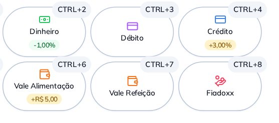

Escolheu dinheiro, o desconto entra; escolheu crédito, o acréscimo entra. O valor fica impresso embaixo do nome da forma, e o operador confere antes de fechar.
Mesma regra no PDV, na mesa, na comanda, no delivery, no totem e no pedido pelo WhatsApp.
